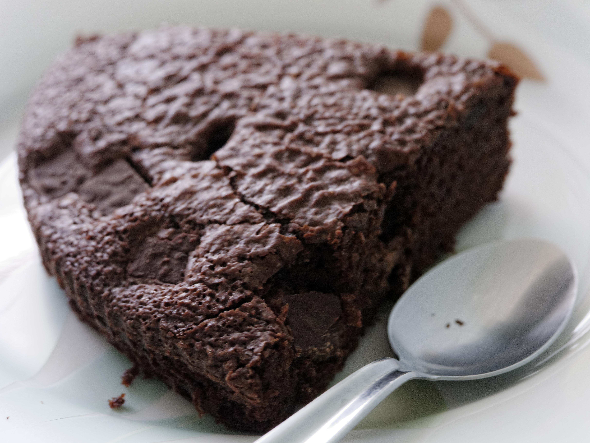
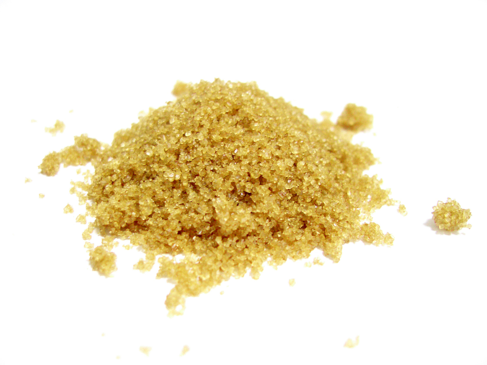
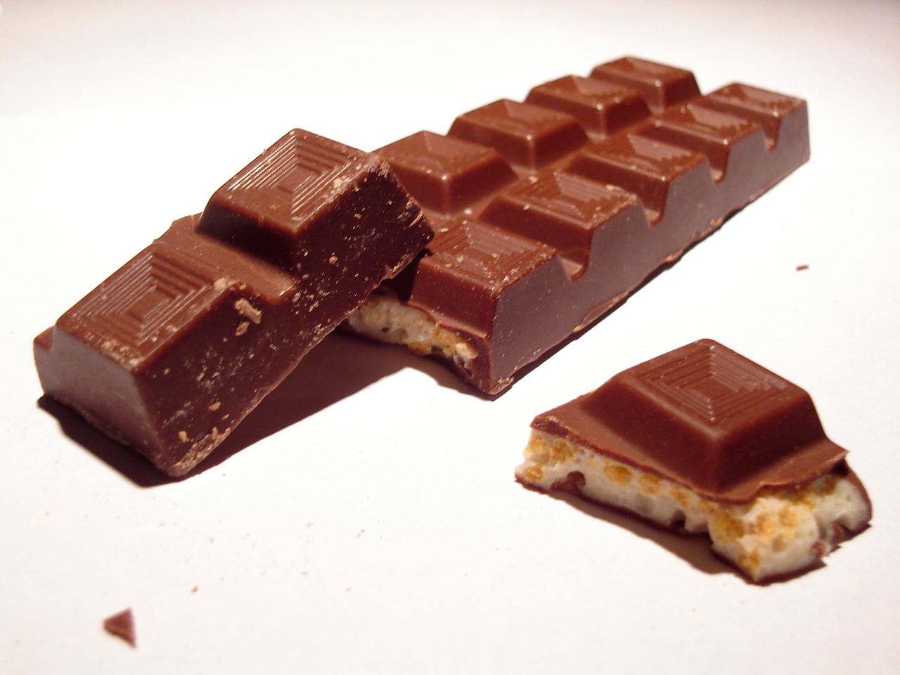

How to bake a delicious brownie

What do we need?


- Chocolate
- 2eggs
- 1 cup white sugar
- 1/2 cup butter
- 1/2 cup all-purpose flour
- 1/4 teaspoon baking powder
- 1/4 teaspoon salt
- 1 teaspoon vanilla extract
Step by Step
- Preheat oven to 350 degrees F (175 degrees C).
- let's chop the chocolate bars and melt it smoothly.
- Cut up the butter and add in to the chocolate. Heat and stir over low heat
until all of the chocolate and butter is melted together.
- Add the sugar to the melted chocolate and butter. Stir with a wooden spoon until the sugar is completely mixed into the chocolate and butter.
- Fifth, Add the eggs one at a time. Stir until the egg is completely incorporated into the chocolate mixture.
- Sixth, Add 1 teaspoon vanilla extract.
- Seventh, Add flour. In a separate bowl stir together the flour and baking soda. Add the flour mixture all at once to the chocolate mixture.
- Eighth, Gently stir the brownie batter until the flour is moistened.If you want you can add some chocolate pieces or nuts.
- Ninth, Bake brownies at 350 degrees F for 25 to 35 minutes.
- Eat and enjoy!